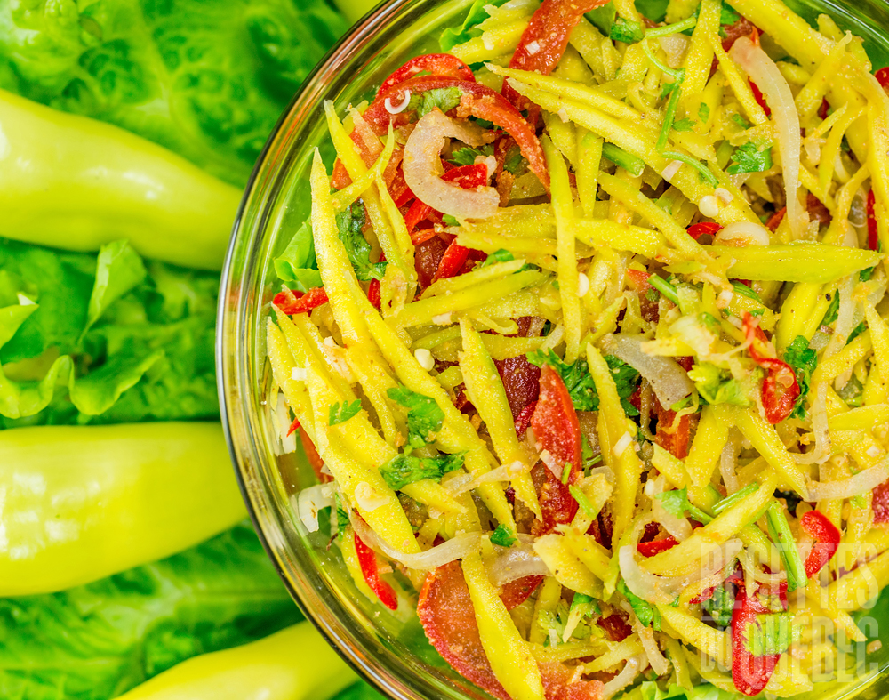

Salade de mangue

Description
Ceci est un accompagnement ou une entrée accidulé à base de mangue
Ingrédients
- Mangue verte et ferme
- 3 càs d'huile de tournesol
- le zeste d'un citron jaune
- 1 càs de jus de citron jaune
- 1 petite gousse d'ail
- 1/2 oignon rouge
- 1 bonne pincée de piment d'Espelette
- 1 càc de sauce soja salée
- sel et poivre
Etapes de préparation
- Éplucher la mangue, prélever toute la chaire autour du noyau et taillez la chaire du fruit en julienne
- Épluchez l'oignon et émincez-la finement puis épluchez à son tour l'ail avant de la réduire en purée
- Préparez la vinaigrette en mélangeant l'huile, le jus de citron, la sauce soja, le piment d'Espelette, l'ail en purée, le poivre et enfin le sel si besoin selon votre goût. La vinaigrette est prête lorsque vous obtenez une émulsion homogène
- Avant de servir, mélangez délicatement la mangue, le zeste de citron et l'oignon rouge émincé puis arrosez le tout avec la vinaigrette, c'est prêt RÉGALEZ-VOUS!